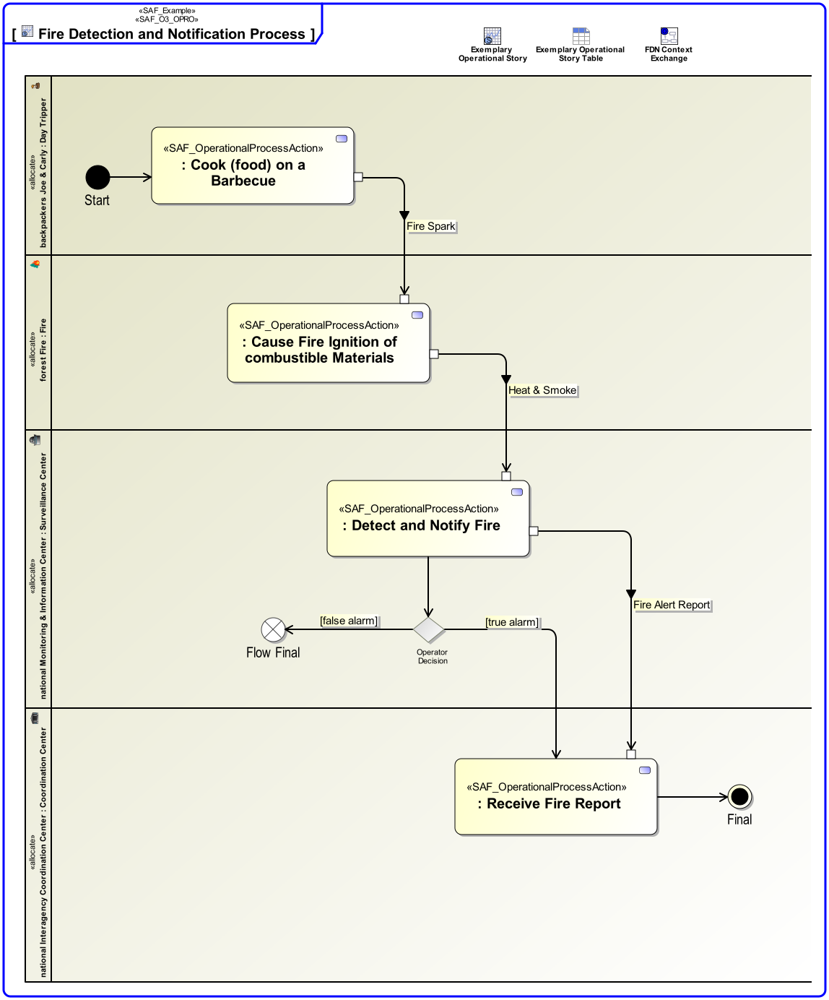
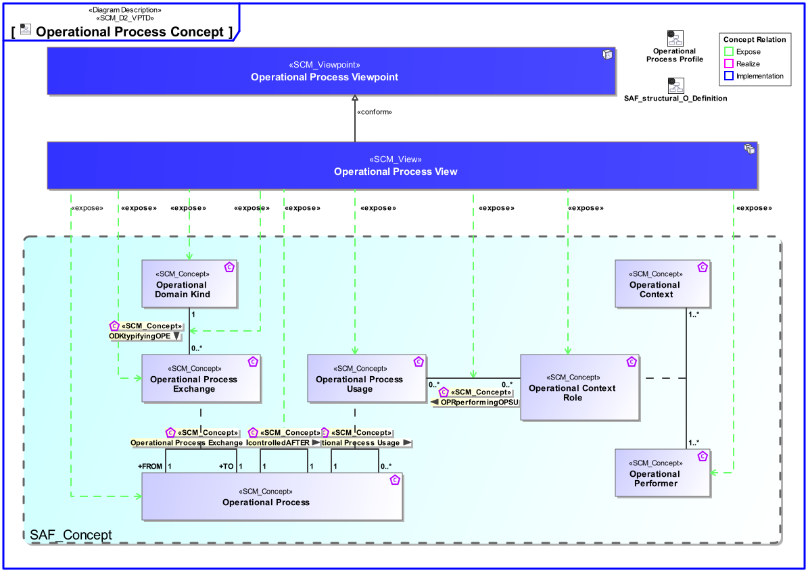
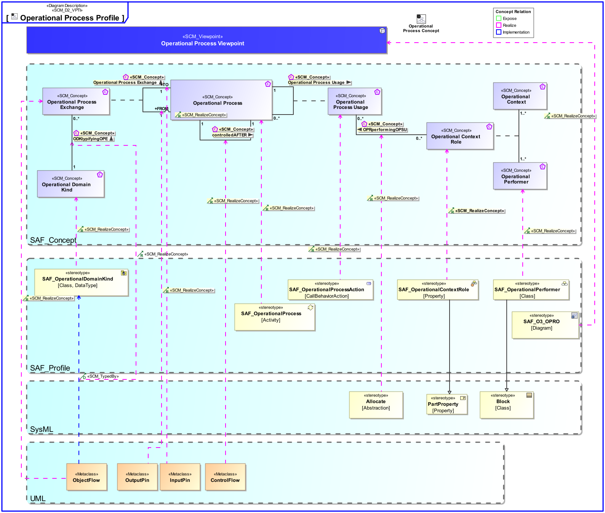

O3_OPRO Operational Process Viewpoint
| Domain | Aspect | Maturity |
|---|---|---|
| Operational | Process & Behavior |

The Operational Process Viewpoint describes the Operational Processes related to a specific Operational Story, the sequence of execution, and their Operational Exchanges, including information, materials, natural resources, etc. The assignment of Operational Processes to Operational Performers is captured.
The Operational Process Viewpoint supports the “Business or Mission Analysis Process” and the “Stakeholder Needs and Requirements Definition Process” activities of the INCOSE SYSTEMS ENGINEERING HANDBOOK 2015 [§ 4.1, § 4.2] and contributes to the definition of operational scenarios.
An activity diagram featuring the ordered execution of Operational Process Actions. Operational Processes may be linked in terms of control flow and/or data flow visualizing the Operational Exchanges needed. Note: Operational Process Actions are assigned to Operational Roles and therefore in a more general manner to Operational Performers.
The following Stereotypes / Model Elements are used in the Viewpoint:
The Diagram shows the concepts exposed by the viewpoint, and related concepts if necessary.

| Concept | Documentation |
|---|---|
| Operational Context Role | An Operational Context Role represents a participant in an Operational context. It is interacting with other roles of the given Operational Context. Specific characteristics and features or, in case of persons or organizational units, knowledge and skills are assigned to a role necessary for the execution of the performed Operational Processes. |
| Operational Performer | An Operational Performer is an element of the Operational Context that is capable to perform Operational Process Activities contributing to a specific identified Operational Capability. An Operational Performer may be any kind of organization, person, or even a system playing a role in one or more Operational Contexts. Aliases: UAF::OperationalPerformer |
| OPRperformingOPSU | Specifies that an Operational Context Role uses an Operational Process in the context of an other Operational Process. |
| ODKtypifyingOPE | Specifies the fact that an Operational Domain Kind typifies an Operational Process Exchange. |
| Operational Domain Kind | Specifies the kind of Operational Item Exchange between Operational Context Roles or Operational Processes. |
| controlledAFTER | Specifies the sequencing of Operational Processes in time. |
| Operational Process Exchange | Specifies the fact that an Operational Process has an exchange with another Operational Process. |
| Operational Process Usage | Specifies the fact that an Operational Process is used in context of another Operational Process. Aliases: UAF::OperationalAction |
| Operational Process | An Operational Process captures activity-based operational behavior including scenarios, activity actions, and operational exchange flows, e.g., including information, materials, natural resources, etc. Aliases: UAF::Operational Activity NAF::Logical Activity |
The Diagram shows the implementation of exposed concepts.
